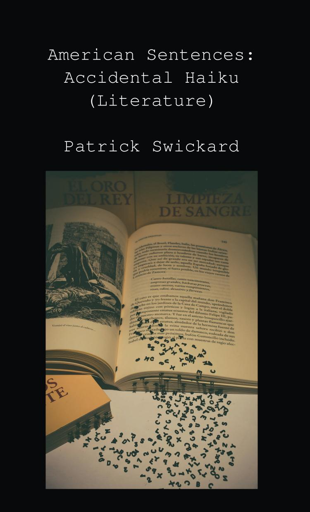
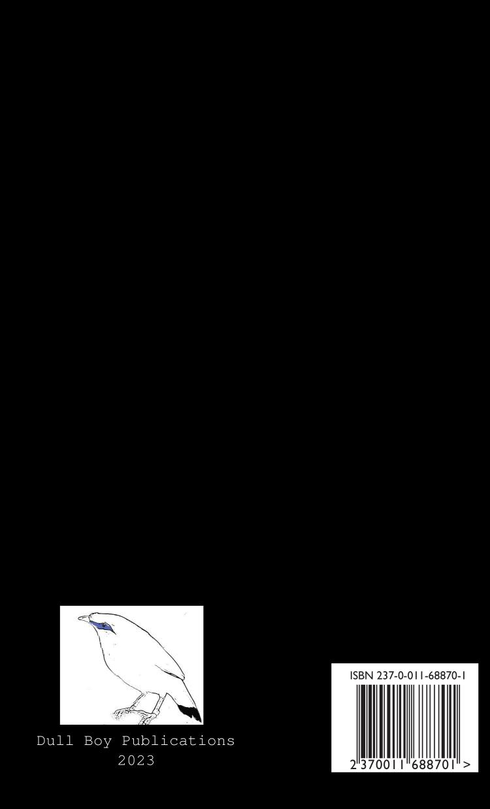

American Sentences: Accidental Haiku (Literature)
Patrick Swickard
5"x8" paperback, 224 pages
He was no more than a baby then
Well he seemed broken-hearted
Something within him
But the moment that I first laid
Eyes on him, all alone
On the edge of seventeen
- Stevie Nicks
A previous book gathered accidental haiku from newspapers. This work instead mines works from Project Gutenberg in public domain. Seventeen syllable subsets that form a skeleton of each text. An arbitrary way to abridge and summarize the longer work. I humbly submit all of these accidental haiku I have found.